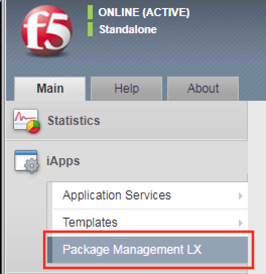

Lab 6.1 - Brief overview of our Ansible setup¶
In this lesson we will look at a high-level overview of our Ansible setup.
We’ll also view what ASM policies currently exist on the BIG-IP and what ASM
policy, if any, are associated with hackazon_virtual virtual server.
Task 1 - Inventory, playbooks, ansible.cfg¶
SSH to the Xubuntu host using the
puttyshorcut that can be found on the desktop.Perform the following command to change the directory to the
f5-ansibledirectory.cd f5-ansiblePerform the following command to view the contents of the directory.
ls -lYou’ll see output similar to the following screenshot:

You’ll see the inventory directory, the playbooks directory, and the ansible.cfg file.
- Inventory - this is where we store our
hostsfile. Thehostsfile is where you store the hosts that we will target when executing our playbooks. In our case this is the BIG-IP, 10.1.1.245.
- Playbooks - this is where we store our
playbookswhich are used to deploy the code we’ve written to execute on our BIG-IP.
- ansible.cfg - this is the configuration file for various settings to use with Ansible.
- Inventory - this is where we store our
Task 2 - View ASM policies and view there are no ASM policies associated with hackazon_virtual virtual server¶
In your web browser, navigate to BIG-IP:
https://10.1.10.20/Navigate to Main > Security > Application Security > Security Policies
You’ll notice the only policy that exists is the one you created in Lab5, iControlLX_Agility2018.
Navigate to Main > Local Traffic > Virtual Servers > Virtual Server List
Select
hackazon_virtualthen navigate to Security > PoliciesNote
You’ll see there is no security policy attached to the virtual server. In the following sections we will attach a policy to the virtual server using Ansible.
{kind=link}
{kind=link}